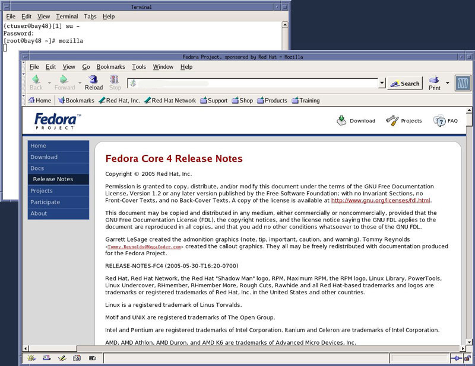
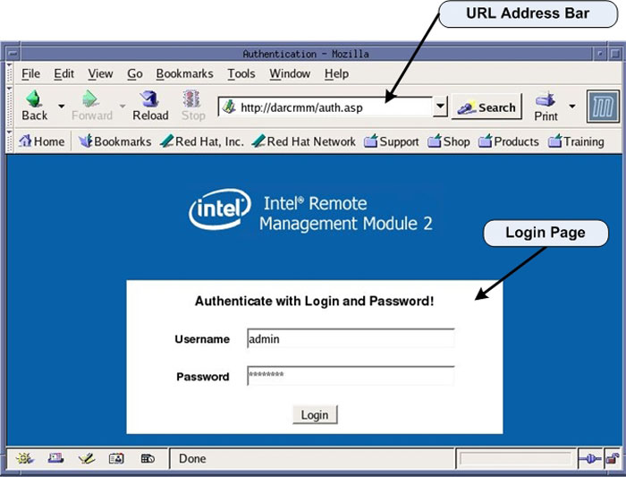
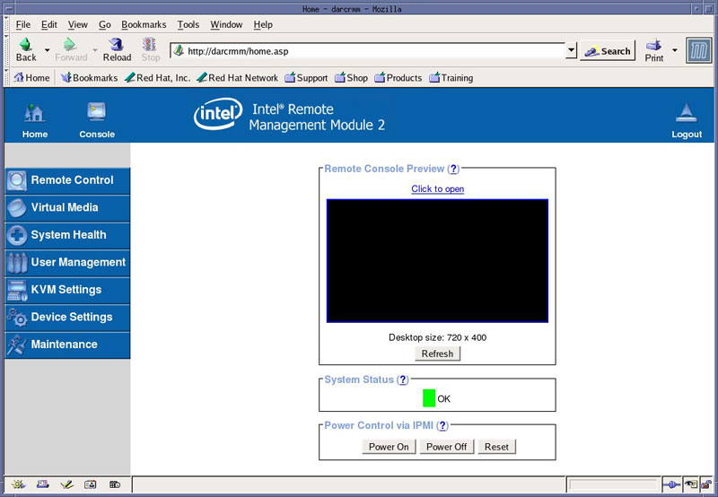
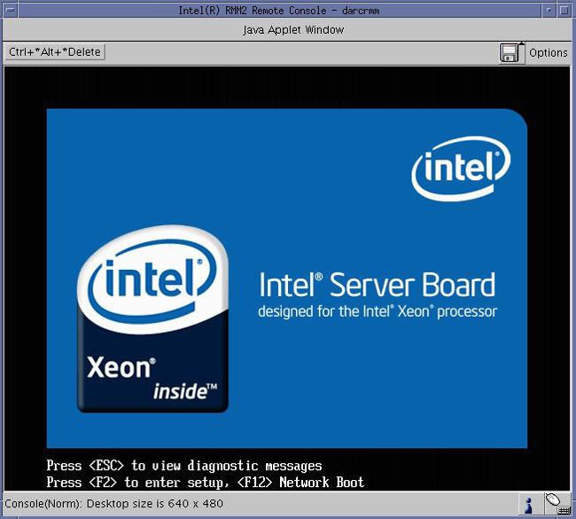

Operating Documentation
Direction 5193574-800, Rev# 22
LightSpeed 7.X Service Methods
Module Version 3.0, Version Date 5/7/10
Operating Documentation |
| Required Persons | Preliminary Reqs | Procedure | Finalization |
|---|---|---|---|
| 1 | Not Applicable | 30 mins | 30 mins |
The following procedure describes and illustrates the BIOS CMOS settings for the DIG Computer.
| NOTE: | Only those settings that are altered from the installed BIOS defaults settings are listed in the procedure. The procedure first restores default values. Select settings are then changed to meet specific needs for the hardware application. |
DIG Motherboard BIOS Revision: S5000.86B.10.00.0084.101720071530, (C0-Stepping CPUs)
OR
DIG Motherboard BIOS Revision: S5000.86B.11.00.0096.101720071530, (E0-Stepping CPUs)
| Last Revised: | 12 January 2010 |
| Condition | Reference | Effectivity |
|---|---|---|
The CT System hardware must be in good working order. | - | - |
Only trained service personnel should service the GE CT Scanner. | - | - |
Shut down Applications from the Common Service Desktop, Utilities Tab.
Open a Terminal Window, and log on as root:
Type: {ctuser@hostname}su-[ENTER]
Type the root password and press [ENTER]
Launch the Mozilla WEB browser:
Type root@hostnamemozilla[ENTER]
Select default profile
Select Start Mozilla
| NOTE: | Steps b & c will only appear if the Mozilla Browser default profile has been altered and saved |
Illustration 1: Mozilla WEB Browser

Follow instruction listed in the following section for setting the DIG Computer Motherboard BIOS Settings.
In the WEB browser URL Address Bar:
Type: darcrmm[ENTER]
The WEB browser will update and display the Login page for the DIG RMM.
Username: Type admin[TAB]
Password: Type: password[ENTER]
Illustration 2: DIG RMM Login Page

The WEB browser will update and display the Home page for the DIG RMM.
Illustration 3: DIG RMM Home Page

Click on [Console] icon or (Click to open) in the Remote Console Preview window on the RMM Home Page to open a remote console.
| NOTE: | The Remote Console is a redirected display of the DIG Computer. It will appear blank when first accessed. The Remote Console will act much like a KVM Switch, virtually using the Host Computer’s Monitor, Keyboard and Mouse. |
Reset the DIG Computer by pressing the [Reset] button on the DIG Computer front panel. This will cause the DIG Computer to reboot, but does not reset the RMM. Shortly there after, the Boot Screen of the DIG Computer should be displayed in the Remote Console window.
Press [F2] on the keyboard when instructed, to enter the DIG Computer’s Motherboard BIOS setting routine. See Illustration BIOS Setup Flash Screen
| NOTE: | Multiple [F2 ] presses may be needed to enter BIOS setup. |
Illustration 4: BIOS Setup Flash Screen

Press [F9] and click [Yes] to load Optimized Defaults (BIOS Default Settings).
Select the [Main] tab.
Set Post Error Pause setting to [DISABLED].
Use +/- keys to change defaults, see on screen menu keys for additional help.
Hit [Esc] to return to the top level of BIOS Setup.
Using the Left and Right Arrow Keys, navigate to the [Advanced] tab.
Set System Acoustic and Performance Configuration > Throttling Mode to [CLOSED LOOP] by pressing the ( - ) key.
Hit [Esc] to return to the top level of the [Advanced] tab.
Set PCI Configuration > Dual Monitor Video to [ENABLED].
Hit [Esc] to return to the top level of the [Advanced] tab.
Set PCI Configuration > OnBoard NIC2 ROM to [DISABLED].
Hit [Esc] to return to the top level of the [Advanced] tab.
FOR C0 STEPPING CPU's, BIOS REV. S5000.86B.10.00.0084.101720071530, ONLY. Set Processor Configuration > Deep C-State Support to [DEFAULT].
| NOTE: | BIOS Revision can be found on the [Main] tab. |
FOR E0 STEPPING CPU's, BIOS REV. S5000.86B.11.00.0096.101720071530 ONLY. Set Processor Configuration > Deep C-State Support to [OFF].
Hit [Esc] to return to the top level of BIOS Setup.
Navigate to the [Boot Options] tab.
Set the boot order settings as follows:
1. IBA GE Slot 400
2. Intel RMM2 Vdrive
3. EFI shell
4. N/A
5. N/A
Press the [F10] and [YES] to save settings and exit.
The DIG Computer will reboot.
After completing the BIOS and/or RMM Settings Procedure, the DIG Computer will reboot. Verify that the DIG Computer has powered up and is not displaying or sounding any POST Errors.
| NOTE: | See DIG Troubleshooting if any “POST” errors appear. |
Close Mozilla browser and reboot the system:
Type: {root@hostname}reboot[ENTER]
To assure proper operation of the DIG computer it is necessary to perform the procedure System Configuration found in the Align, Setup, Cals chapter of this manual.
| NOTE: | No changes are required in the System, Preferences, Hardware, and Network settings. The procedure just needs to be executed in order for the automated scripts to run. During the reconfiguration process the DHCP Server running on the Host Computer is reconfigured to support the new DIG Computer Ethernet MAC addresses. |
| NOTE: | Until the System Configuration Procedure is performed, the Linux OS bootup text will display an error message when the DIG computer attempts to mount its NFS on the Host Computer. Ignore the error message. |
Go to Functional Checks in this manual and perform System Scanning Test to confirm proper operation.